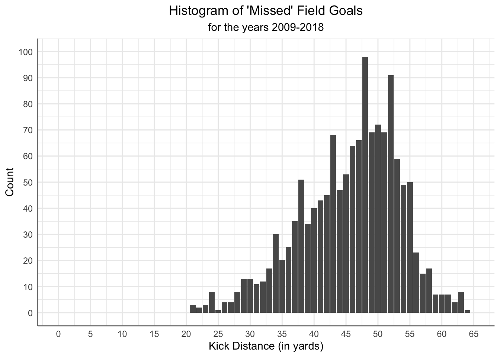

#get the year out of game_date
nfl_plays$year<-substr(nfl_plays$game_date,1,4)
nfl_plays$order<-1
nfl_plays <- nfl_plays %>%
labelled::set_variable_labels(play_type = "Type of Play",
field_goal_result = "Field Goal Result")
totals <- nfl_plays %>%
filter(play_type=="run" | play_type=="pass") %>%
group_by(game_id,posteam_type,play_type) %>%
summarise(total=sum(yards_gained))
#create a new variable that concatenates posteam_type and play_type
totals$category <- paste(totals$posteam_type,totals$play_type,sep='_')
#transform to wide format
totals_wide <- totals %>%
pivot_wider(id_cols=game_id,names_from = category, values_from = total)
#last play of the game
final_score <- nfl_plays %>%
select(game_id,total_home_score,total_away_score,posteam_type,play_type,field_goal_result,kick_distance,posteam_type) %>%
group_by(game_id) %>%
slice_tail(n = 1) %>%
ungroup()
#Did the Home team win the game? 1=yes, 0=no
final_score$home_team_won <- ifelse(final_score$total_home_score>final_score$total_away_score,1,0)
#Score differential
final_score$score_diff <- final_score$total_home_score-final_score$total_away_score
#merge totals_wide and final_score
totals_wide2 <- left_join(totals_wide,final_score,join_by(game_id))ST558 Project 2
Prepping up the data
Preparing for R Shiny app development
For this project, I decided to look at the NFL play-by-play Data for the years 2009-2018 from kaggle.com. The data had 449,371 observations and 255 variables. It looks like teams have indeed embraced throwing the football because 41.5% of the plays between 2009-2018 were ‘pass’ plays and 29.5% were ‘run’ plays.
nfl_plays %>%
count(play_type) %>%
mutate(percent=n*100/sum(n))# A tibble: 10 × 3
play_type n percent
<chr> <int> <dbl>
1 extra_point 10934 2.43
2 field_goal 9777 2.18
3 kickoff 25552 5.69
4 no_play 42431 9.44
5 pass 186677 41.5
6 punt 23914 5.32
7 qb_kneel 3830 0.852
8 qb_spike 690 0.154
9 run 132692 29.5
10 <NA> 12874 2.86 If you watch football, you know that many games are decided by making field goals, which were 2.18% of all plays played between 2009-2018 and 83.9% of them were ‘made’.
nfl_plays %>%
filter(play_type=="field_goal") %>%
count(field_goal_result) %>%
mutate(percent=n*100/sum(n))# A tibble: 3 × 3
field_goal_result n percent
<chr> <int> <dbl>
1 blocked 196 2.00
2 made 8206 83.9
3 missed 1375 14.1 The average distance of the field goals ‘made’ between 2009-2018 was around 36 yards with a range of 18-64 yards. The record for the longest field goal was broken during this time frame in 2013 by Matt Prater of the Denver Broncos with a 64 yard field goal kick. Until that time, the record was 63 yards by Tom Dempsey of the New Orleans Saints in 1970. The current record is 66 yards held by Justin Tucker of the Baltimore Ravens which was kicked in the 2021 season which is outside the range of this data. (Source: ESPN and Wikipedia)
fg_made <- nfl_plays %>%
filter(play_type=="field_goal" & field_goal_result=="made")
summary(fg_made$kick_distance) Min. 1st Qu. Median Mean 3rd Qu. Max. NA's
18.00 28.00 36.00 36.05 44.00 64.00 6 Most field goal attempts were completed on ‘Fourth Down’, but in the second, fourth and in overtime (categorized as 5th quarter in the data) the field goal attempt could have been done on ‘First’, ‘Second’ and ‘Third’ downs which makes sense especially if you watch football because if a team is not able to get into the end zone before Halftime or need those 3 points to win the game they are going to kick the field goal at the close of the first half or at the end of regulation.
nfl_plays %>%
filter(play_type=="field_goal") %>%
count(down) %>%
mutate(percent=n*100/sum(n))# A tibble: 5 × 3
down n percent
<dbl> <int> <dbl>
1 1 279 2.85
2 2 265 2.71
3 3 244 2.50
4 4 8988 91.9
5 NA 1 0.0102nfl_plays %>%
filter(play_type=="field_goal") %>%
count(qtr,down) %>%
mutate(percent=n*100/sum(n))# A tibble: 15 × 4
qtr down n percent
<dbl> <dbl> <int> <dbl>
1 1 4 1809 18.5
2 2 1 206 2.11
3 2 2 169 1.73
4 2 3 160 1.64
5 2 4 2899 29.7
6 2 NA 1 0.0102
7 3 4 1849 18.9
8 4 1 56 0.573
9 4 2 73 0.747
10 4 3 56 0.573
11 4 4 2341 23.9
12 5 1 17 0.174
13 5 2 23 0.235
14 5 3 28 0.286
15 5 4 90 0.921 It is interesting to see that the “home” team had a slightly higher percentage of their field goal kicks “blocked” when the field goal attempt was the last play of the game, but the “home” team did have a slight advantage with the “visiting” team. The “visiting” did have a slightly higher percentage of “missed” field goals in the closing seconds of regulation.
fg_pcts <- final_score %>%
filter(play_type=="field_goal") %>%
count(posteam_type,field_goal_result) %>%
group_by(posteam_type) %>%
mutate(percent=n*100/sum(n)) %>%
ungroup()
fg_pcts# A tibble: 6 × 4
posteam_type field_goal_result n percent
<chr> <chr> <int> <dbl>
1 away blocked 1 1.02
2 away made 85 86.7
3 away missed 12 12.2
4 home blocked 3 2.97
5 home made 88 87.1
6 home missed 10 9.90ggplot(data=fg_pcts, aes(x=posteam_type,y=percent,fill=field_goal_result)) +
geom_bar(stat="identity",position=position_dodge()) +
labs(title = "Histogram of Field Goals on the last play of the game",
subtitle = "for the years 2009-2018",
x = "Kicking team",
y = "Percent") +
scale_fill_hue(name="Field Goal Result") +
theme_minimal() +
theme(plot.title=element_text(hjust = 0.5),
plot.subtitle=element_text(hjust = 0.5),
axis.line = element_line(colour = "grey50"))+
scale_y_continuous(limits=c(0,100),breaks=c(0,10,20,30,40,50,60,70,80,90,100))
How close was the game when the game ended in a “field goal”? I created a “bubble plot” where each “bubble” is the proportion of games at the “kick distance” and the final score difference between the “home” and “visiting” team. A “negative” final score difference on the graph represents the “visiting” team winning the game and a “positive” final score difference represents the “home” team winning the game. If we look at the bubble plot, there was an instance where the “home” team missed the field goal and the game resulted in a “tie.” There are three instances where the score difference was greater than 5, but the majority of the games where the last play was a field goal the game was close, within 4 points of each other.
final_score_fg <- final_score %>%
filter(play_type=="field_goal")
fg_pcts2 <- final_score_fg %>%
filter(play_type=="field_goal") %>%
count(kick_distance,score_diff,posteam_type,field_goal_result) %>%
group_by(score_diff) %>%
mutate(size=n*100/sum(n))
fg_pcts2$category <- paste(fg_pcts2$posteam_type,fg_pcts2$field_goal_result,sep=' ')
ggplot(fg_pcts2, aes(x=score_diff,y=kick_distance, size = size, color = category)) +
geom_point() +
labs(title = "Bubble Plot of Field Goals on the last play of the game",
subtitle = "for the years 2009-2018",
y = "Kicking distance",
x = "Score Difference") +
theme_minimal() +
theme(plot.title=element_text(hjust = 0.5),
plot.subtitle=element_text(hjust = 0.5),
axis.line = element_line(colour = "grey50"))+
scale_x_continuous(limits=c(-10,4),breaks=c(-10,-8,-6,-5,-4,-3,-2,-1,0,1,2,3,4))+
scale_y_continuous(limits=c(0,100),breaks=c(0,10,20,30,40,50,60,70,80,90,100))We have looked at the overall “made” field goal distances, field goal results by team at the end of regulation and now lets take a look at the individual kickers. I came across the neat graph called a “Cleveland Dot Plot” and I thought this would be a neat way to take a look at what Field Goal Kickers have the best percentage of “made” field goals during the years 2009-2018. It looks like M. Scifres of the San Diego Chargers is 100% with only 1 field goal and S. Andrus (San Francisco 49ers) has the worst percentage of “made” field goals with only 2 out of 5 field goals or 40% ‘made’.
kicker_stats <- nfl_plays %>%
filter(play_type=="field_goal") %>%
group_by(kicker_player_name,field_goal_result) %>%
summarise(total=sum(order)) %>%
ungroup() %>%
group_by(kicker_player_name) %>%
mutate(percent=(total/sum(total))*100)
kicker_stats_made <- kicker_stats %>%
filter(field_goal_result=="made") %>%
arrange(percent)
ggplot(kicker_stats_made, aes(x = percent, y = reorder(kicker_player_name, percent))) +
geom_point(size = 0.5) +
labs(title = "Cleveland Dot Plot of Field Goals 'Made'",
subtitle = "by Player for the years 2009-2018",
x = "Percent",
y = "Kicker") +
scale_x_continuous(limits=c(0,100),breaks=c(0,10,20,30,40,50,60,70,80,90,100))+
theme_bw() +
theme(
plot.title=element_text(hjust = 0.5),
plot.subtitle=element_text(hjust = 0.5),
panel.grid.major.x = element_blank(),
panel.grid.minor.x = element_blank(),
panel.grid.major.y = element_blank(),
axis.text.y = element_text(angle = 0, vjust = 1, size=5)
)